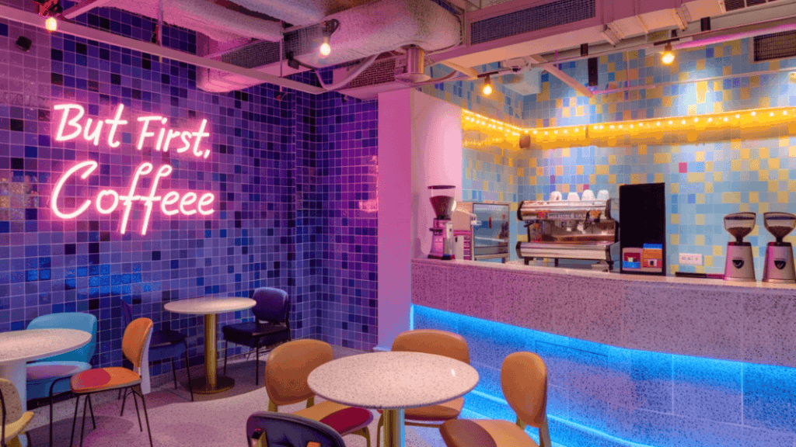
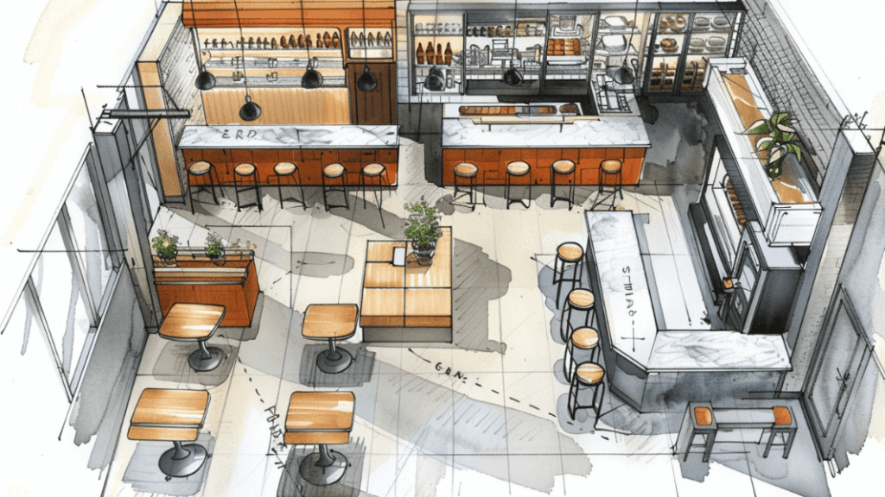
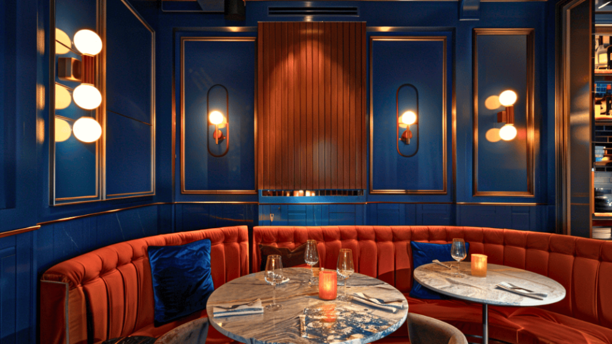
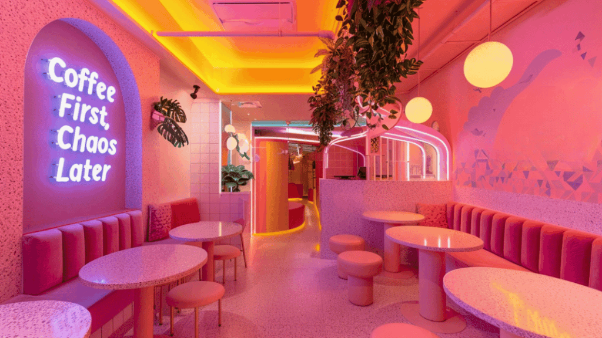

If you’re reading this blog, chances are you’re serious about starting your dream café.
Maybe you’ve already locked in a location, or you’re scouting a few spots. Either way, let’s set the record straight:Before you even think about colour palettes or Pinterest boards, there are a few things you need in place before onboarding an interior designer.
→ Checklist for First-Time Café Owners:
- Finalise your location (neighbourhood and floor plan affect design choices).
- Lock in your menu direction (bakes & brews? all-day breakfast? speciality coffee?)
- Identify your service model (self-service, counter service, or table service)
- Know your budget range (for both fit-out and interiors).
Once these are in place, you’re ready to bring in a designer who can help translate your vision into reality.
1. Start With Your Brand Story

Your café isn’t just a space—it’s your personality brewed into bricks.
Is it a sunlit space for remote workers? A maximalist Gen Z magnet? A bakery-meets-bookstore hybrid?
The stronger your brand narrative, the easier every design decision becomes—from furniture to the floor finish.
2. Define Your Target Audience
IDesign isn’t about your personal taste—it’s about who you want walking through the door.
Are you catering to students, office-goers, families, or the dating crowd?
Each audience has different needs: plug points vs. prams, solo seats vs. shareable tables.
Your layout, lighting, seating type—even your restroom design—should reflect who you’re building for.

3. Map the Flow First, Then Style
Before you dive into paint swatches and pendant lights, nail your layout.
Where will the service counter go? Is there a natural queue path? Do delivery pick-ups disrupt the dine-in vibe?
Even a 300 sq. ft. café can feel open with smart circulation.
Pro tip: Use wall-hugging bench seating and movable stools to create flexible formats.
4. Choose a Cohesive Theme (But Don’t Overdo It)
Pick a theme that supports your story—and stick to it.
Boho-chic, industrial grunge, Nordic minimalism—whatever your vibe, make it consistent across:
- Furniture style
- Lighting
- Wall and flooring finishes
- Even your menu typography
But remember: One clear story is better than ten conflicting trends.n and build approach can make or break your success. Let’s make sure it’s the former.

5. Lighting: The Real Mood Setter
Good lighting makes your coffee look great. Bad lighting? It makes everything look like an afterthought.
Use a mix of:
- Ambient (general mood lighting)
- Task (focused lights over counters)
- Accent (for art, walls, or signs)
Natural light by day and warm tones by evening = magic.
And in dim locations? Bring in a statement chandelier or backlit arches to make the space pop.
6. Materials That Work Hard
Cafés are high-traffic zones—spills, scrapes, and lots of elbows on tables.
Choose materials that are:
- Easy to clean
- Stain-resistant
- Aesthetically consistent
- Durable under daily use
Think terrazzo, laminates, natural wood, textured walls, and anti-skid tiles.
Bonus points for sustainability—reclaimed timber and jute never go out of style.

7. Add That One “Instagram Moment”
You don’t need five neon signs and a swing.
You just need one unforgettable spot.
Whether it’s a mural, an open barista station, or a signature tiled wall, it should be visually iconic and camera-ready.
Because let’s be honest: Instagram is your new word-of-mouth.
Final Sip
Designing your café is more than picking cushions and coffee cups.
It’s a strategic decision that shapes experience, operations, and perception.
When you know your basics—location, menu, audience—your interior designer can focus on doing what they do best: turning your dream into a destination.